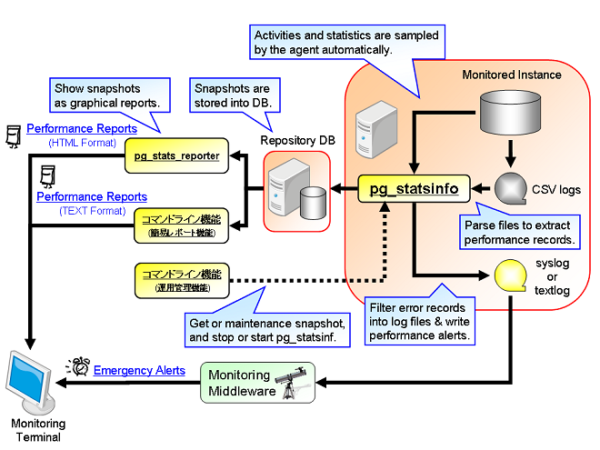

pg_statsinfo -- monitor statistics and activities of PostgreSQL server. It is easy to use pg_statsinfo that pg_statsinfo is working with PostgreSQL start or stop.
pg_statsinfo monitors an instance of PostgreSQL server and gather the statistics and activities of the server as snapshots. The snapshots will be stored in the same or another repository database. It also parses PostgreSQL's CSV server log filesm and extracts performance logs from them. Error messages are routed into textlog and syslog according to the message levels.
pg_statsinfo can be easily installed and maintained because it starts or stops automatically when PostgreSQL server starts or stops. Also etting parameters are integrated with setting files of the server. Statistics counters from pg_statsinfo can be displayed with pg_reporter as graphical reports.
pg_statsinfo works as the following image. It monitors one PostgreSQL instance (server).
pg_statsinfo gathers statistics periodically and stores them as snapshots into a repository database. The repository can be in the same database with the monitored instance or in another instance. Also, one repository can store snapshots from multiple monitored instances.
Snapshot holds the following statistics information:
Size of a snapshot depends on the numbers of objects in DB. There are about 600 - 800kB per snapshot. In case of pg_statsinfo default settings, snapshots for each monitored DB requires 90 - 120MB per day.
Note that pg_statsinfo doesn't delete old snapshots. Please delete them manually.
Note that pg_statsinfo doesn't delete old server log files. Please delete them manually.
If database statistics is over threshold which was set by user, pg_statsinfo detect and write alert log in postgresql-log(message level is 'ALERT').
Alert function can set following alert parameter:
How to set alert function, Please read following passage.
We have making statistics report command that is analyzed by repository data. And, this command has following function:
A stardard usage of pg_statsinfo is explained in the section.
$ su # rpm -ivh pg_statsinfo-2.4.0-1/pg84.rhel5.x86_64.rpm
You can use pgxs to bulld the module from the source codes. You don't have to run sql files manually because pg_statsinfo installs them automatically for both monitored instances and repositories.
$ cd pg_statsinfo $ tar xzvf pg_statsinfo.tar.gz $ cd pg_statsinfo $ make USE_PGXS=1 $ su # make USE_PGXS=1 install
Note: RPMs of PostgreSQL9.0,9.1,9.2 change the install directory path. Therefore, the RPM of pg_statsinfo also changes install paths. For example, executable files are installed to "/usr/bin" previously. But from PostgreSQL9.0, these files are installed to "/usr/pgsql-9.0/bin".
#minimam configuration shared_preload_libraries = 'pg_statsinfo' # preload pg_statsinfo libraries log_filename = 'postgresql-%Y-%m-%d_%H%M%S.log' # pg_statsinfo need this log_filename setting
#recommended configuration
shared_preload_libraries = 'pg_statsinfo' # preload pg_statsinfo libraries
custom_variable_classes = 'pg_statsinfo'
pg_statsinfo.snapshot_interval = 30min # set snapshot interval
pg_statsinfo.enable_maintenance = 'on' # enable maintenance mode('on' or 'off')
pg_statsinfo.maintenance_time = '00:02:00' # Delete old snapshots every day in this time.
pg_statsinfo.repository_keepday = 7 # keep old snapshots in this period in maintenance.
log_filename = 'postgresql-%Y-%m-%d_%H%M%S.log' # pg_statsinfo need this log_filename setting
log_min_messages = 'log'
pg_statsinfo.syslog_min_messages = 'error'
pg_statsinfo.textlog_line_prefix = '%t %p %c-%l %x %q(%u, %d, %r, %a) ' # This format is same as syslog's format.
pg_statsinfo.syslog_line_prefix = '%t %p %c-%l %x %q(%u, %d, %r, %a) ' # This format is same as syslog's format.
track_functions = 'all'
log_checkpoints = on
log_autovacuum_min_duration = 0
#pg_statsinfo.long_lock_threashold = 30s #threthold parameter for getting LOCK infomation
Attention!
Allow the user who run the PostgreSQL server to login the server without any passwords from localhost. The recommended method is "ident" authentication here. Add the following line to pg_hba.conf when you use "OS-user = DB-superuser = postgres", that is the most common case. Note that you will need to add it in pg_hba.conf in front of other methods. The ident authentication method with TYPE=local will be convenient on UNIX.
# TYPE DATABASE USER CIDR-ADDRESS METHOD [for UNIX] local all postgres ident
Finally, setup postgresql.conf with the following setting when the monitored PostgreSQL instance stops. In this settings, the repository will be created in 'postgres' database on the same server with monitored database. See also "Configuration File" for other setting parameters.
log_checkpoints = on # record checkpoint activities log_autovacuum_min_duration = 0 # record autovacuum activities shared_preload_libraries = 'pg_statsinfo' # preload the library
In addition, contrib/pg_statsinfo.sql and contrib/pg_statsrepo.sql are installed automactically. So, you don't need to install them manually.
Also, if you use PostgreSQL 8.4 or later, pg_stat_statements is installed in 'postgres' database in the monitored instance, pg_statsinfo gathers the query statistics and add them into snapshot. If you will use it, run the following command only once at the fist server start.
$ psql -d postgres -f $PGSHARE/contrib/pg_stat_statements.sql
That's all. Install is finished.
This section is explained maintenance and configuration in pg_statsinfo.
You only have to start PostgreSQL server when you start pg_statsinfo. pg_statsinfo will be kicked to start by the server; It cannot run in standalone.
$ pg_ctl start [OPTIONS]
Also pg_statsinfo automatically stops when PostgreSQL server shutdowns. Non-smart shutdown with 'pg_ctl stop -m fast|immediate' might cause some error messages, but you can ignore those errors.
$ pg_ctl stop -m smart [OPTIONS]
Pg_statsinfo gets snapshot every interval time. Interval time configuration is in the following.
example: snapshot interval time is 30min
pg_statsinfo.snapshot_interval = 30min
If you want to get snapshot manualy, you use SQL statsinfo.snapshot function(text DEFAULT NULL).
$ psql -d postgres -c "SELECT statsinfo.snapshot('comment')"
If you want to maintain snapshot repository, you configure automatic maintenance mode in postgresql.conf. Auto maintenance is executed every day. Enable auto maintenance mode is in the following.
pg_statsinfo.enable_maintenance = 'on' pg_statsinfo.maintenance_time = '00:00:00' pg_statsinfo.repository_keepday = 7
Caution! : If you don't use automatic maintenance mode, repository size will be very large. Plese maintenance repository manualy in every term.
You can use statsrepo.del_snapshot(timestamptz) function to delete snapshots in the repository.
Snapshots older than the specified timestamp will be deleted.
Example: delete snapshots older than 2010-02-01 07:00:00.
$ psql -d <repository> -c "SELECT statsrepo.del_snapshot('2010-02-01 07:00:00'::timestamptz);"
pg_statsinfo has log filtering function. Following section is explain about output of logfile in pg_statsinfo.
This log is latest log output with filltered by pg_statsinfo in PostgreSQL. If you don't set filltering level (pg_statsinfo.textlog_min_messages), logfile output is more than warning level log. And, if you set pg_statsinfo.textlog_filename in postgresql.conf, logfile name is this parameter.
This log is lotated old 'postgresql.log' which is over following. When you start PostgreSQL, you can see this log with filesize 0. This is normal and not problem.
This log is PostgreSQL output original csv log. Pg_statsinfo is filltered the original csv log and output the filltering log. But this log is not filltered at all!
Configuration parameters and usages are explained in the section.
pg_statsinfo uses postgresql.conf in the monitored instance for a configuration file. Settings in the configuration file are read at the instance's startup and reloads with 'pg_ctl reload'.
You must setup the following parameters before using pg_statsinfo. Some of the paramters cannot be changed online and require server's restart.
| Name | Setting | Description |
|---|---|---|
| shared_preload_libraries | 'pg_statsinfo' | Preloaded libraries. If you also use pg_stat_statements, append the module name with a comma like 'pg_statsinfo, pg_stat_statements'. |
| track_counts | on | Enables collection of statistics on database activity. |
| track_activities | on | Enables the collection of information on the currently executing command of each session. |
| log_min_messages | debug5 ∼ log | A message level threshoulds for server logs. The value must be more verbose than 'log', pg_statsinfo.syslog_min_messages, and pg_statsinfo.textlog_min_messages. |
| log_timezone | unknown, gmt, utc | Only those values are supported. |
| log_destination | must have 'csvlog', and can have 'syslog' or 'eventlog' optionally | pg_statsinfo always adds 'csvlog' and removes 'stderr' during startup. |
| logging_collector | on | pg_statsinfo always set it to this value during startup. |
There some optional parameters that affect pg_statsinfo's activities. They can be changed online when reloaded with pg_ctl reload.
If you use PostgreSQL 8.3, read 'pg_statsinfo.*' as 'statsinfo.*'.
| Name | Default Setting | Description |
|---|---|---|
| track_functions | none | Enables tracking of function call counts and time used. Set to 'pl' or 'all' if you want pg_statsinfo to gather the statistics. |
| log_checkpoints | off | Causes checkpoints to be logged in the server log. 'on' is recommended. |
| log_autovacuum_min_duration | -1 | Causes autovacuums to be logged in the server log. 0 ∼ 1min are recommended. |
| log_directory | 'pg_log' | A directory for csvlog and textlog files. |
| log_filename | 'postgresql-%Y-%m-%d_%H%M%S.log' | A file format for csvlog and textlog files. The value should be contain %Y, %m, %d, %H, %M, and %S in this order. |
| log_rotation_age | 1d | Rotates logs in the specified duration. |
| log_rotation_size | 10MB | Rotates logs in the specified file size. The size will be compared with csvlogs. |
| syslog_facility | 'LOCAL0' | syslog facility |
| syslog_ident | 'postgres' | syslog indent |
| custom_variable_classes | 'pg_statsinfo' | Required when you set parameters that starts with "pg_statsinfo.". |
| pg_statsinfo.textlog_min_messages | warning | Minimum message levels for textlog (*1). |
| pg_statsinfo.syslog_min_messages | disable | Minimum message levels for syslog (*1). Event log is used on Windows instead of syslog. |
| pg_statsinfo.textlog_filename | 'postgresql.log' | The latest textlog filename. Should not be empty. |
| pg_statsinfo.textlog_line_prefix | '%t %p ' | A printf-style string that is output at the beginning of each textlog line. (*2) |
| pg_statsinfo.syslog_line_prefix | '%t %p ' | A printf-style string that is output at the beginning of each syslog line. (*2) Note that timestamp and process IDs appended by syslog is replaced to values of pg_statsinfo daemon. So, you need to add %t and %p to record the original values. |
| pg_statsinfo.textlog_permission | 0600 | Permission setting for textlog files. |
| pg_statsinfo.sampling_interval | 5s | sampling interval (*3) |
| pg_statsinfo.snapshot_interval | 5min | snapshot interval (*3) |
| pg_statsinfo.excluded_dbnames | 'template0, template1' | Unmonitored database names. |
| pg_statsinfo.repository_server | 'dbname=postgres' | Connection string to connect the repository (*4). You need to avoid password input. |
| pg_statsinfo.adjust_log_level | off | |
| pg_statsinfo.adjust_log_info | - | Configuration of SQLSTATE which is changing massage level for INFO(*5) |
| pg_statsinfo.adjust_log_notice | - | Configuration of SQLSTATE which is changing massage level for NOTICE(*5) |
| pg_statsinfo.adjust_log_warning | - | Configuration of SQLSTATE which is changing massage level for WARNING(*5) |
| pg_statsinfo.adjust_log_error | - | Configuration of SQLSTATE which is changing massage level for ERROR(*5) |
| pg_statsinfo.adjust_log_log | - | Configuration of SQLSTATE which is changing massage level for LOG(*5) |
| pg_statsinfo.adjust_log_fatal | - | Configuration of SQLSTATE which is changing massage level for FATAL(*5) |
| pg_statsinfo.enable_maintenance | 'on' | Setting of auto_maintenance.
|
| pg_statsinfo.long_lock_threashold | 30s | Threashold of getting LOCK infomation in pg_locks. |
| pg_statsinfo.log_maintenance_command | This parameter is server log cleanup command. If we use default shell, old server log is decommpressed. | |
| pg_statsinfo.stat_statements_max | 30 | Upper limit of information in pg_stat_statements. |
| pg_statsinfo.stat_statements_exclude_users | - | Exclude user in pg_stat_statements. If you want to set multi user, you use separator ','. |
In default setting, Alert function is always ON in each instance.
You can change the threshold of alert function and ON or OFF function.
If you want to change the threshold of alert function, you should update the alert function table.
# UPDATE statsrepo.alert SET commit_tps = 3000 WHERE instid = <instance ID\>Exmaples: Disable Alert Function
# UPDATE statsrepo.alert SET enable_alert = false WHERE instid = <instance ID>
Alert setting table is stored alert function parameter and disable of enable
information.
Alert setting table is "statsrepo.alert". And, setting table's schema is in following:
| column | data type | default parameter | explanation |
|---|---|---|---|
| instid | bigint | - | instance ID |
| rollback_tps | bigint | 100 | ROLLBACK / sec |
| commit_tps | bigint | 1000 | COMMIT / sec |
| garbage_size | bigint | 20000 | garbage size (MB) |
| garbage_percent | integer | 30 | percentage of garbage size ratio(%) |
| response_avg | bigint | 10 | average time of query responce (sec) |
| response_worst | bigint | 60 | longest time of query responce (sec) |
| enable_alert | boolean | true | enable or disabele for alert function (TRUE is enable and FALSE is disable) |
Please don't delete an alert table's tuple.
If you delete the tuple, you can not set the alert function in the instance.
$ pg_statsinfo -r REPORTID [-i INSTANCEID] [-b SNAPID] [-e SNAPID] [-B DATE] [-E DATE] [-o FILENAME] [connection-options]
Making all report command is under the followings.
$ pg_statsinfo -h localhost -d postgres -p 5432 -U postgres -r All
If you want to see another type of report. You type "pg_statsinfo --help" and see the manual.
When you uninstall pg_statsinfo, you have to restart PostgreSQL server after removing 'pg_statsinfo' from shared_preload_libraries and all of pg_statsinfo.* parameters in postgresql.conf.
After that, drop all objects used by pg_statsinfo installed in the monitored instance. Run $PGSHARE/contrib/uninstall_pg_statsinfo.sql for 'postgres' database in the monitored instance.
$ psql -d postgres -f $PGSHARE/contrib/uninstall_pg_statsinfo.sql
If you also want to delete snapshots, run $PGSHARE/contrib/uninstall_pg_statsrepo.sql to the repository. Be careful to run the script file because it will delete all of snapshots including other server's ones when the repository was shared by multiple monitored instances.
$ psql -d <repository> -f $PGSHARE/contrib/uninstall_pg_statsrepo.sql
You can use statsrepo.del_snapshot(timestamptz) function to delete snapshots in the repository.
Snapshots older than the specified timestamp will be deleted.
Example: delete snapshots older than 2010-02-01 07:00:00.
$ psql -d <repository> -c "SELECT statsrepo.del_snapshot('2010-02-01 07:00:00'::timestamptz);"
If you wanto take a snapshot in arbitrary time, you can execute statsinfo.snapshot(text DEFAULT NULL) function on 'postgres' database in the monitored instance.
The function takes a comment for the snapshot as an argument.
Example: Take a snapshot in manual with a comment 'comment'.
$ psql -d postgres -c "SELECT statsinfo.snapshot('comment')"
If you want to reset configuration parameters online, just modify postgresql.conf and send a reload signal with pg_ctl.
$ pg_ctl reload
if you want to rotate logs in arbitrary time, execute the following function on the monitored instance.
$ psql -d postgres -c "SELECT pg_rotate_logfile()"
There are still some restrictions and limitations in pg_statsinfo.
Pg_statsinfo gets snapshot and stores it in statsrepo schema. If you want to confirm if pg_statsinfo waorks normal, you can use under following SQL.
$psql -d postgres -c "SELECT statsinfo.snapshot('test')"
$psql -d postgres -c "SELECT * FROM statsrepo.snapshot WHERE COMMENT = 'test'"
If you execute 2nd SQL and get result, pg_statsinfo works normal.
Pg_statsinfo's snapshot function has only getting PostgreSQL's statistics every uniform regularly. If you want to see useful and visual report from snapshot, you can use pg_reporter. Example of pg_repoter's output report is here.
First, please confirm your configuration file(postgresql.conf) that is right settings. The other things, when you installed from source file and mistaked to install pg_statsrepo.sql, or when you did not use "make USE_PGXS=1" compile option and installed, this situation does not work well. In this situation, you drop the statsrepo schema and restart your PostgreSQL. pg_statsrepo.sql is schema for only PostgreSQL8.3. If you use PostgreSQL8.4 or later, you can not execute this SQL file.
please use method under following.
1. Create role for pg_statsinfo in motitored PostgreSQL instance. # CREATE ROLE statsinfo WITH LOGIN SUPERUSER; 2. Set log_statement = 'none' in pg_statsinfo's role. # ALTER ROLE statsinfo SET log_statement = 'none' 3. Set PGUSER=statsinfo in enviroment variable in OS for pgstatsinfo's role. $ export PGUSER=statsinfo 4. Restart your PostgreSQL. $ pg_ctl restart
More advanced usages and internal structures are explained in the section.
We can set Multiple instance and One Repository system. If you want to set the systems, you set following parameter in each instance and less password setting in repository.
pg_statsinfo.repository_server = 'hostaddr=192.168.0.32 port=5432 user=postgres dbname=postgres'
Warm standby can be used together with pg_statsinfo. There are two typical setups for warm standby mode. See also "pg_statsinfo: warm-standby" for details.
pg_statsinfo consists of a library and a daemon. The library is loaded by PostgreSQL server, and the daemon is run as a database client. Since the daemon is executed from a hook function in the library, users don't have to execute the daemon explicitly. See also "pg_statsinfo: internal" for details.